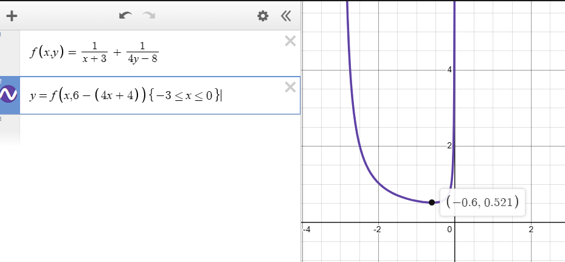

cyrxdzj的文化课学习笔记 数学001 基本不等式
创建 内容更新 导出 2023-09-22 21:58:37 2023-11-06 20:09:17 2024-03-17 11:43:52 原文链接：https://blog.cyrxdzj.eu.org/2023-09-22-CyrxNote-Math-001/
作者：cyrxdzj
本文件仅为静态文件。如有条件，建议访问原文链接。
$\require{color}$
基本不等式是真 tm 难学，前一章节”集合“还那么简单，再一章难度就直接拉满。
1、1 的代换法
有 $2$ 个式子，$\textcolor{red}{x}+\textcolor{green}{\frac{y}{4}}$ 和 $\textcolor{red}{\frac{2}{x}}+\textcolor{green}{\frac{2}{y}}$，其中 $x>0,y>0$。若把这两个式子相乘会发生什么？
可以发现，相同颜色的式子相乘，分子和分母可以互相抵消，得到常数。不同颜色的式子相乘，分子和分母不可以互相抵消，但是可以为接下来的基本不等式创造条件。
因此，我们得到 $(\textcolor{red}{x}+\textcolor{green}{\frac{y}{4}})(\textcolor{red}{\frac{2}{x}}+\textcolor{green}{\frac{2}{y}})\\=\textcolor{blue}{2}+\textcolor{blue}{\frac{1}{2}}+\textcolor{purple}{\frac{2x}{y}}+\textcolor{purple}{\frac{2y}{4x}}$。
我们发现，标记为蓝色的结果，是相同颜色的式子相乘得到的常数。而标记为紫色的结果，是不同颜色的式子相乘得到的。可以发现，标记为紫色的结果，若相乘，是可以互相抵消的。
由此，我们可以得到 $\textcolor{blue}{2}+\textcolor{blue}{\frac{1}{2}}+\textcolor{purple}{\frac{2x}{y}}+\textcolor{purple}{\frac{2y}{4x}}\ge(2+\frac{1}{2})+2\sqrt{\frac{2x}{y}\times\frac{2y}{4x}}=\frac{9}{2}$。也就是说，$({x}+{\frac{y}{4}})({\frac{2}{x}}+{\frac{2}{y}})$ 的最小值为 $\frac{9}{2}$。
众所周知，任何数乘 $1$ 都等于原数。
例如，若 $x>0,y>0,\frac{1}{x}+\frac{9}{y}=1$，求 $x+y$ 的最小值。
对于这道题，可以发现 $x+y=(x+y)(\frac{1}{x}+\frac{9}{y})=1+9+\frac{9x}{y}+\frac{y}{x}$（暴力死算出来），然后就可以将后面那一坨 $\frac{9x}{y}+\frac{y}{x}$ 用基本不等式求最值了。
如果 $\frac{1}{x}+\frac{9}{y}=2\ne1$，那也好办，可以在整个算式前面乘上一个数使这个算式的值为 $1$。 对于上面的式子，$\frac{1}{2}\times（\frac{1}{x}+\frac{9}{y})=1$，那么 $x+y=(x+y)[\frac{1}{2}\times(\frac{1}{x}+\frac{9}{y})]=(x+y)(\frac{1}{x}+\frac{9}{y})\times\frac{1}{2}$，求出前面的 $(x+y)(\frac{1}{x}+\frac{9}{y})$ 的最值就搞定了。
再看看这个。若 $x>0,y>0,x+8y=xy$，求 $x+2y$ 的最小值。
可以发现，$(x+8y)\div(xy)=(xy)\div(xy)$，也就是说 $\frac{1}{y}+\frac{8}{x}=1$。又回来了。
有些时候还需要一点转换。比如 $\frac{x+2y}{xy}=\frac{1}{y}+\frac{2}{x}$，这个应该不难理解，就是将分子拆开来分别除以分母即可。
2、配凑法
当 $x>\frac{1}{2}$ 时，求 $x+\frac{1}{2x-1}$ 的最小值。
可以发现 $\frac{x}{2x-1}$ 不是定值，不能直接开基本不等式。
那么，我们可以尝试将前面的 $x$ 转换成一个整式，使这个整式除以 $2x-1$ 可以得到一个实数（无论是不是整数都行，别带未知数就好）。分子分母互相抵消，才能使用基本不等式。
于是，原式被转化为了 $(x-0.5)+\frac{1}{2x-1}+0.5$，先在前面加 $0.5$，再在后面减 $0.5$。
这样就可以用基本不等式了：$(x-0.5)+\frac{1}{2x-1}+0.5\ge2\sqrt{\frac{x-0.5}{2x-1}}+0.5$。
3、结合 1 和 2 的知识解题
当 $x>-2,y>-2,\frac{1}{x+2}+\frac{1}{y+2}=\frac{1}{6}$ 时，求 $x+y$ 的最小值。
首先，由方法 1 可知，$6(\frac{1}{x+2}+\frac{1}{y+2})=1$。
但即便是这样，$x+y$ 也并不是很好处理。
这个时候，我们可以借助方法 2，$x+y=(x+2)+(y+2)-4$。
接下来，求出 $(x+2)+(y+2)$ 的最小值即可。
$x+y=(x+2)+(y+2)-4$……使用配凑法
$=[(x+2)+(y+2)]\times6(\frac{1}{x+2}+\frac{1}{y+2})-4$……使用 1 的代换法
$=6\times\begin{bmatrix}(x+2)+(y+2)\end{bmatrix}(\frac{1}{x+2}+\frac{1}{y+2})-4$……整理式子，将 $6$ 丢一边
$=6\times(1+1+\frac{x+2}{y+2}+\frac{y+2}{x+2})-4$……强行计算括号中的内容
$=6\times(\frac{x+2}{y+2}+\frac{y+2}{x+2})+12-4$……把无关的 $12$（即 $6\times(1+1)$）丢出去
$\ge6\times2\sqrt{\frac{x+2}{y+2}\times\frac{y+2}{x+2}}+8$……启用基本不等式
$=20$……计算得出结果
搞定。
这类基本不等式，分以下步骤解决：
条件归一。也就是把 $\frac{1}{x+2}+\frac{1}{y+2}=\frac{1}{6}$ 化成 $6(\frac{1}{x+2}+\frac{1}{y+2})=1$。
配凑。将 $x+y$ 化成 $(x+2)+(y+2)-4$。需要注意，以上两个步骤有可能需要互换顺序，具体情况见下方。
两式相乘。也就是得到 $(x+2)+(y+2)-4=[(x+2)+(y+2)]\times6(\frac{1}{x+2}+\frac{1}{y+2})-4$。
强行计算。
启用基本不等式。
有的时候，条件式和原式的样式可能恰好反过来。来看看进阶版本：
当 $x>-3,y>2,4x+y+4=6$ 时，求 $\frac{1}{x+3}+\frac{1}{4y-8}$ 的最小值。
这道题细节很多，需要细心计算。
可以发现，$4x+y+4=6$ 作为条件式，需要条件归一；作为整式（未知数不出现在分母上。相对地，$\frac{1}{x+3}+\frac{1}{4y-8}$ 是分式），又需要配凑。先配凑，再条件归一。
因此，可以配凑得出 $4x+12+y-2=6+12-6=12$。条件归一得出 $\frac{1}{12}[4(x+3)+\frac{1}{4}\times(4y-8)]=1$。
接下来，设 $a=x+3>0,b=4y-8>0$。在遇到这种式子时，设 $a$ 和 $b$ 可以防止式子过长。这样，我们就要求 $\frac1a+\frac1b$ 的最小值。
回到上面的式子，我们可以发现：
$\frac1a+\frac1b\\=\frac{1}{12}\begin{bmatrix}4a+\frac{1}{4}b\end{bmatrix}(\frac1a+\frac1b)\\=\frac{1}{12}(4+\frac14+\frac{\frac14b}{a}+\frac{4a}{b})\\\ge\frac{1}{12}(\frac{17}{4}+2\sqrt{\frac{\frac14b}{a}\times\frac{4a}{b}})\\=\frac{1}{12}(\frac{17}{4}+2)=\frac{25}{48}$
当且仅当 $\frac{\frac14b}{a}=\frac{4a}{b}$ 时，等号成立。
接下来验算一下。
$\because\frac{\frac14b}{a}=\frac{4a}{b}\\\therefore\frac{1}{4}b^2=4a^2\\b=4a\\4(x+3)=4y-8\\x+3=y-2\\x-y=-5$
又因为 $4x+y+4=6$，解得 $x=-\frac35,y=\frac{22}{5}$。
验算如图。

这道题，出题人在做的时候，都差点做错。
4、使系数相等
再看看：当 $a>0,b>0,2a+3b=12$ 时，求 $\frac{1}{ab}$ 的最小值。
显然，当 $ab$ 最大的时候，就是 $\frac{1}{ab}$ 最小的时候。
但是，条件是 $2a+3b=12$,这意味着 $a+b$ 是会变的，不能直接使用基本不等式。
那么，我们考虑改变一下 $ab$ 这边。给 $a$ 搞个系数 $2$，给 $b$ 搞个系数 $3$，最后统一 $\div6$，我们就有 $ab=(2a\cdot3b)\times\frac{1}{6}\le(\frac{2a+3b}{2})^2\times\frac{1}{6}=6$，那么 $\frac{1}{ab}$ 的最小值就是 $\frac{1}{6}$。
5、将分数中的分子用类似于带分数的思想提取出来
当 $x>1$ 时，求 $\frac{x^2-x+1}{x-1}$ 的最小值。
对于这道题，可以发现 $(x-1)x=x^2-x$，于是原式可以被化为 $\frac{x(x-1)+1}{x-1}=x+\frac{1}{x-1}$。接着再用配凑法，即可算出式子的最小值为 $3$。
提取什么东西应该根据题目要求来。例如，同样是 $x>1$ 时，求 $\frac{x^2-2x+5}{x-1}$ 的最小值。
可以注意到，此时最好提取 $x-1$ 出来，得 $x-1+\frac{4}{x-1}$。可以很轻松地算出最小值为 $4$，当且仅当 $x-1=\frac{4}{x-1}$ 时，即 $x=3$ 时，等号成立。
扩展一个知识：整式除法。
例如，当 $x>-2$，求 $\frac{2x^2+8x+20}{x+2}$。
首先，当前被除数是 $2x^2+8x+20$，当前除数是 $x+2$。
可以发现，当前被除数的最高次数项是 $2x^2$，系数是 $2$，次数是 $2$。而除数 $x+2$ 的最高次数项的系数是 $1$，次数是 $1$。
因此可以发现，如果将 $x+2$ 乘上 $2x$ 可以得到 $2x^2+4x$。因此，$\frac{2x^2+8x+20}{x+2}=2x+\frac{(2x^2+8x+20)-(2x^2+4x)}{x+2}=2x+\frac{4x+20}{x+2}$。被除数中的 $2x^2$ 就被消去了，当前被除数就变成了 $4x+20$。
接着，当前被除数的最高次数项是 $4x$，系数是 $4$，次数是 $1$。当前除数的最高次数项的系数和次数都没变，都还是 $1$。因此，$4(x+2)=4x+8$，$2x+\frac{4x+20}{x+2}=2x+4+\frac{(4x+20)-(4x+8)}{x+2}=2x+4+\frac{12}{x+2}$。化简成这样，再用基本不等式就不难了。
6、转化为一元二次不等式求解
已知 $ab+a+b=8,a>0,b>0$，则：
A. $ab$ 最大值为 $2$
B. $a+b$ 最小值为 $4$
C. $a+2b$ 最小值为 $6\sqrt2-3$
D. $\frac{1}{a(b+1)}+\frac{1}{b}\ge\frac{1}{2}$
请注意本题多选。
可以由基本不等式发现，$a+b\ge2\sqrt{ab},ab\le(\frac{a+b}{2})^2$，也就是说：
$8=ab+a+b\ge ab+2\sqrt{ab}$
$8=ab+a+b\le(\frac{a+b}{2})^2+(a+b)=\frac{1}{4}(a+b)^2+(a+b)$。
经过一定的转化，我们就可以分别得到 2 个一元二次不等式：
$(\sqrt{ab})^2+2\sqrt{ab}-8\le0$（将 $\sqrt{ab}$ 视为一个未知数整体）
$(a+b)^2+4(a+b)-32\ge0$（将 $(a+b)$ 视为一个未知数整体）
根据一元二次不等式的求解方法，第一条不等式可以得出 $-4\le\sqrt{ab}\le2$，第二条不等式可以得出 $a+b\le-8$ 或 $a+b\ge4$。
别忘了 $a>0,b>0$。因此，$0 < \sqrt{ab}\le2,a+b\ge4$。因此，A 选项错误，B 选项正确。
C 选项的情况，将在下一节讲解。
7、消元：将一个数用另一个数表示出来
回到前面的题目。
可以发现，$ab+a+b=ab+b+a=(a+1)b+a$。
所以，因为 $ab+a+b=8$，所以 $b=\frac{8-a}{a+1}$。
因此 $a+2b\\=a+2\times\frac{8-a}{a+1}\\=a+\frac{16-2a}{a+1}\\=a-2+\frac{18}{a+1}\\=a+1+\frac{18}{a+1}-3\\\ge2\sqrt{ ( a+1 ) \times\frac{18}{a+1}}-3\\=6\sqrt{2}-3$。C 选项正确。
D 选项的情况，将在下一节讲解。
8、1 的代换法（进阶版）
可以发现，$a(b+1)+b=ab+a+b=8$。
因此，$\frac{1}{a(b+1)}+\frac{1}{b}=\frac{1}{8}[a(b+1)+b][\frac{1}{a(b+1)}+\frac{1}{b}]=\frac{1}{8}[1+1+\frac{a(b+1)}{b}+\frac{b}{a(b+1)}]\ge\frac{1}{8}(2+2\sqrt{1})=\frac{1}{2}$。D 选项正确。
其实也没进阶多少，只是关系隐藏起来了。
9、超级无敌分数嵌套
求 $\frac{x^2+3x+3}{2x^2+7x+7}(x>-1)$ 的最小值。
首先，$2x^2+7x+7=2(x^2+3x+3)+(x+1)$，因此 $\frac{x^2+3x+3}{2x^2+7x+7}=\frac{x^2+3x+3}{2(x^2+3x+3)+(x+1)}=\frac{1}{2+\frac{x+1}{x^2+3x+3}}$（分子分母同时除以 $x^2+3x+3$）。显然，当 $\frac{x+1}{x^2+3x+3}$ 最大时，分母 $2+\frac{x+1}{x^2+3x+3}$ 最大，分数整体最小。
然后，$x^2+3x+3=(x+1)(x+1)+(x+1)+1$，因此 $\frac{x+1}{x^2+3x+3}=\frac{x+1}{ ( x+1 ) ( x+1 ) + ( x+1 )+1}=\frac{1}{x+1+1+\frac{1}{x+1}}$。可以发现，当 $x+1+1+\frac{1}{x+1}$ 最小时，$\frac{1}{x+1+1+\frac{1}{x+1}}$ 最大。
我们可以很容易地求出 $x+1+1+\frac{1}{x+1}$ 最小为 $3$，所以 $\frac{1}{x+1+1+\frac{1}{x+1}}$ 最大为 $\frac{1}{3}$，进而求出原式最小值为 $\frac{1}{2+\frac{1}{3}}=\frac{3}{7}$。
对于这种问题，我们可以不断地尝试将分子化为 $1$，然后，当 $a>0,b>0$ 时，$a$ 不变的情况下，$b$ 越大时 $\frac{a}{b}$ 越小。根据这个原理，可以反复求最大/最小值，最终解出题目。
10、将条件代入某个整数中，使分子和分母变得可以互相约分
已知 $x+y=1,y>0,x>0$，求 $\frac{1}{2x}+\frac{x}{y+1}$ 的最小值。
可以发现，此时无法直接使用基本不等式，因为 $1$ 和 $y+1$ 不能互相约分掉。
考虑 $x+y=1$ 这个条件，可以发现 $x+y+1=2$，那么原式就等于 $\frac{\frac{1}{2}(x+y+1)}{2x}+\frac{x}{y+1}=\frac{x+y+1}{4x}+\frac{x}{y+1}=\frac{1}{4}+\frac{y+1}{4x}+\frac{x}{y+1}\ge\frac{1}{4}+2\sqrt{\frac{y+1}{4x}\times\frac{x}{y+1}}=\frac{5}{4}$，当且仅当 $\frac{y+1}{4x}=\frac{x}{y+1}$ 时（即 $x=\frac{2}{3},y=\frac{1}{3}$ 时），可以取等号。
已知 $a>0,b>0,a+b=2$，求 $\frac{b}{a}+\frac{4}{b}$ 的最小值。
可以发现，$4=2a+2b$，所以 $\frac{b}{a}+\frac{4}{b}=\frac{b}{a}+\frac{2a+2b}{b}=\frac{b}{a}+\frac{2a}{b}+2\ge2\sqrt{\frac{b}{a}\times\frac{2a}{b}}+2=2\sqrt2+2$，当且仅当 $\frac{b}{a}=\frac{2a}{b}$ 时等号成立。
11、总结
不等式问题没有固定解法，在高考中难度相当大。这种题目只能靠多刷题积累来的经验，因此应记住做过的题的解法，也要善于利用网络。
链接阅读
基本不等式（二）——多元问题处理技巧（知乎专栏）（友情提醒，这一篇文章贼tm难）